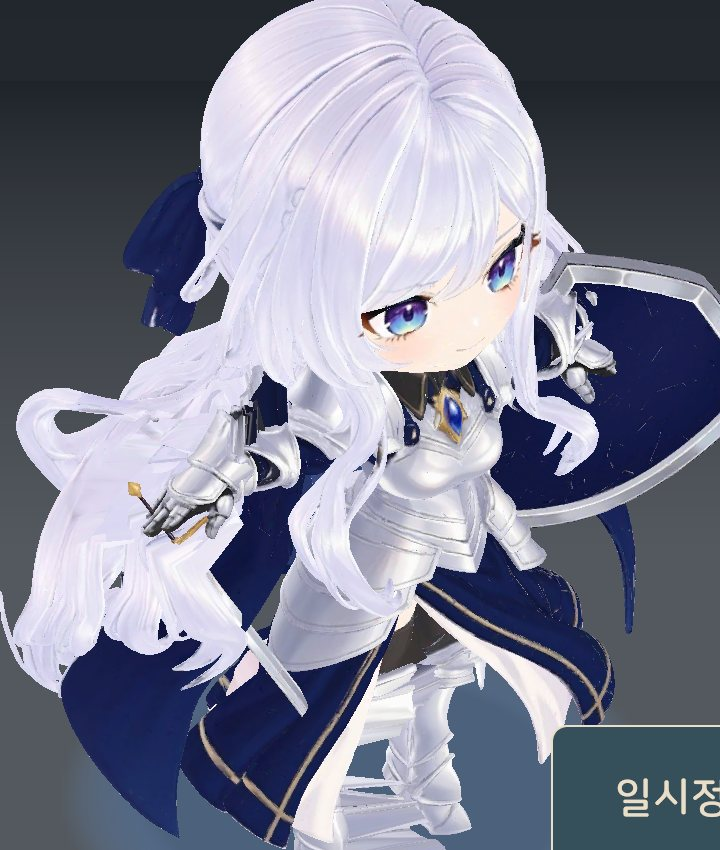
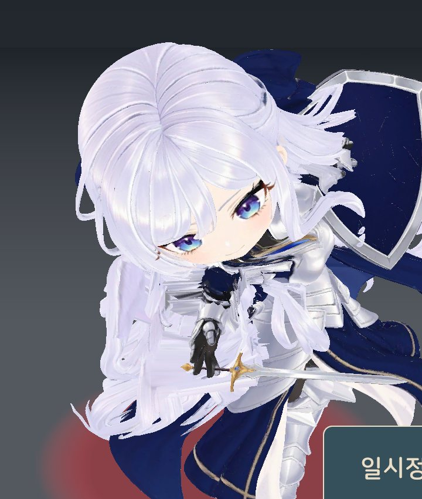
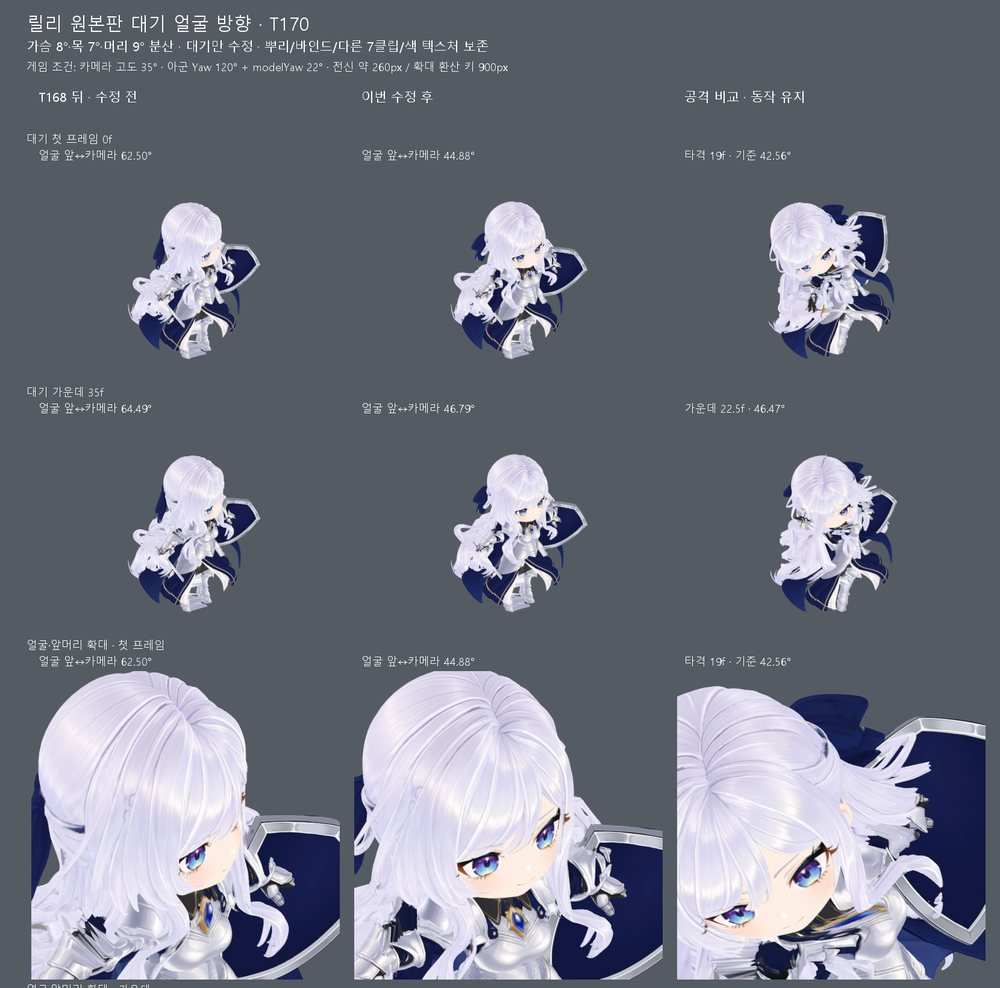
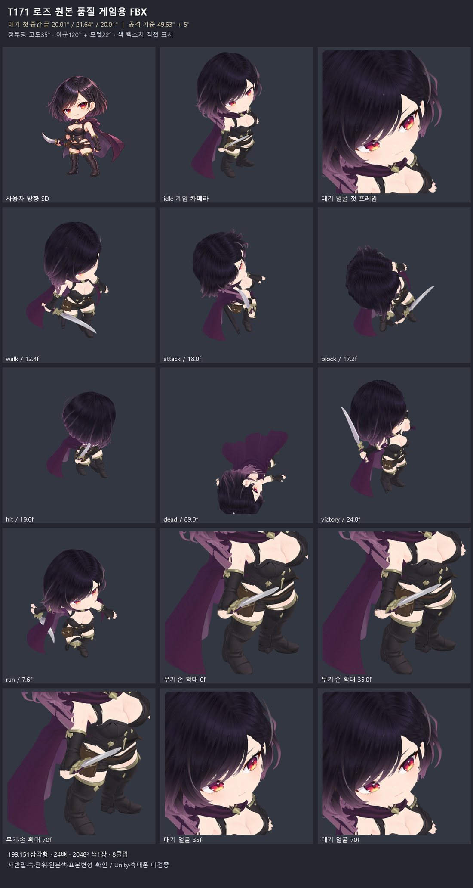
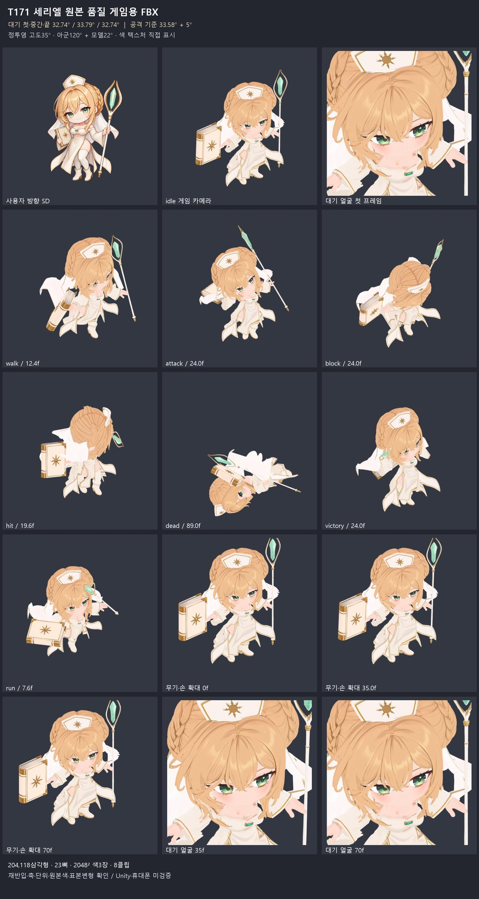
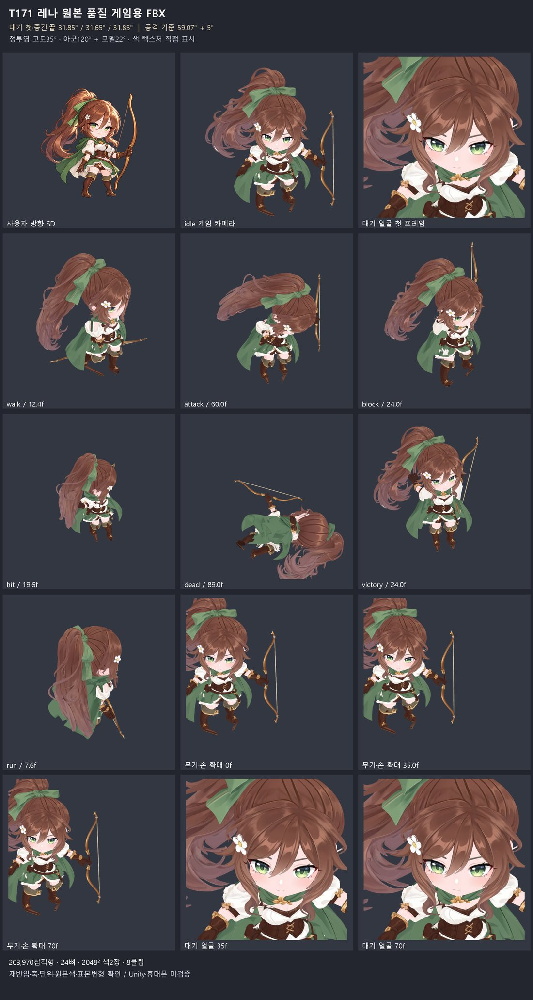
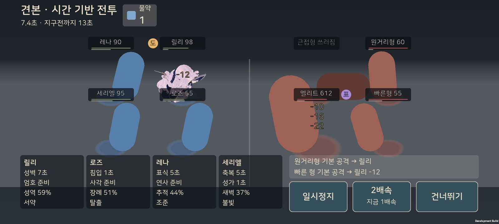
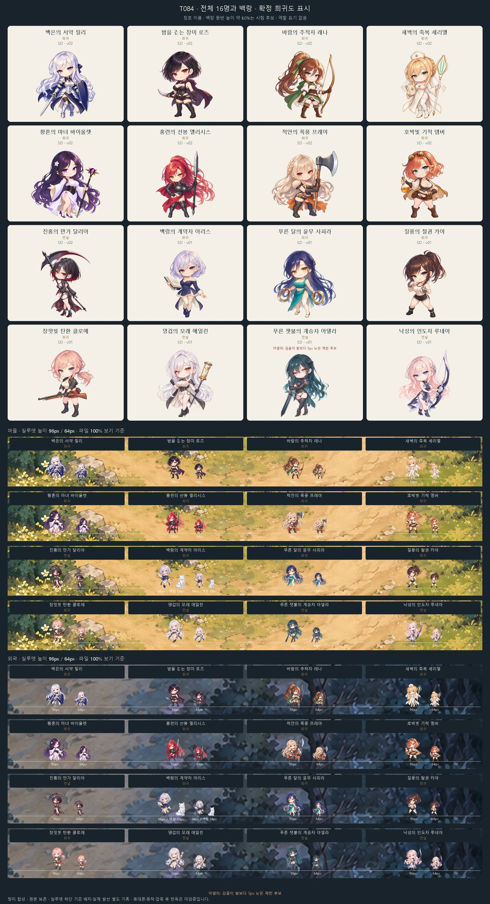

최후의 길드 · 모바일 게임 · 2026-10-01 기준
최후의 길드 작업 현황
오늘은 전투를 3D로 옮기는 일을 중심으로 진행했습니다. 게임 규칙과 저장은 그대로 두고, 화면이 전투 기록을 3D로 재생합니다.
오늘 정한 것
- 확정게임 전체를 3D로 옮깁니다. 순서는 탑 전투 → 마을·지도입니다.
- 확정3D 모델은 원본 품질 그대로 씁니다(릴리 원본판). 줄여야 하면 먼저 여쭙니다.
- 확정카메라는 지금 각도(위에서 35°)를 두고 인물을 1.2배로 키웁니다.
- 확정희귀 기준 능력치는 영웅 +10%, 전설 +20%입니다. 승급 마지막 단계는 '달인'입니다.
- 확정희귀 모험가는 마을에 찾아오면 골드로 고용합니다. 전설은 이야기 합류와 드문 방문을 섞고, 한 파티 인원은 1 → 2 → 제한 없음으로 늘어납니다.
- 확정영웅·전설의 추가 스킬은 '심상영역'입니다. 펼친 인물이 전투 규칙 하나를 바꾸고, 동료들이 그 규칙으로 함께 싸웁니다. 첫 시험은 에일린 '영겁의 모래정원'(받은 피해를 모았다가 되돌림)입니다.
원형 넷 3D
SD 그림 → 3D 모델 → 뼈대·동작 8개 → 게임용 손질 순서로 만듭니다. 서 있을 때 두 눈이 카메라에 보이도록 고개와 얼굴 방향을 고쳤습니다.
- 완성릴리: 게임에 들어가 휴대폰에서 확인했습니다.
- 완성로즈·세리엘·레나: 게임용 3D 완성. 게임에 넣는 것은 다음 단계입니다.

릴리 · 서 있을 때(휴대폰 화면)
릴리 · 공격 순간(휴대폰 화면)
릴리 · 서 있을 때 얼굴 방향 고치기 전·후

로즈 · 게임용 3D 완성(동작 8개, 서 있을 때 얼굴, 단검)

세리엘 · 게임용 3D 완성(동작 8개, 성서·지팡이)

레나 · 게임용 3D 완성(동작 8개, 서 있을 때 얼굴, 활)
휴대폰 전투 화면
시험 휴대폰: 갤럭시 A90 5G. 이름표와 피해 숫자는 흰 머리 위에서도 읽히도록 어두운 판과 테두리를 넣었습니다.

휴대폰 전투 화면 · 릴리만 3D, 파란·빨간 기둥은 아직 모델이 없는 자리(인물 1.2배, 이름표 뒤 어두운 판)
성능과 발열
여덟 자리 모두 원본판 릴리로 세운 가장 무거운 경우입니다. 10분 동안 전투만 쉬지 않고 재생했습니다.
| 초당 60프레임(지금) | 초당 30프레임 |
|---|
| 화면 부드러움 | 57.6~58.8 | 28.8~29.5 |
| 폰 발열 단계 | 5분부터 '심함' | 9분에 '보통' |
| 폰 표면 온도 | 45.1℃ | 40.3℃ |
| 칩 온도 | 58.1℃ | 47.9℃ |
| 배터리 온도 상승 | +3.9℃ | +1.5℃ |
- 앱 크기는 원본판 릴리 한 명에 약 12.6MB 늘어납니다(모습을 바꾸지 않는 줄이기 적용 뒤).
- 첫 전투를 열 때 멈추던 시간은 0.91초에서 0.12초로 줄였습니다.
- 전투 사이에 마을 화면이 끼는 실제 흐름에서도 8분에 '심함'이 되었습니다. 가벼운 예비판 모델(60프레임)은 30프레임과 비슷하게 10분까지 '보통'이었습니다.
기다리는 결정
- 파티에 심상영역 인물이 둘 이상일 때 누구의 영역을 열지(전투 전 고르기 추천). 30층 이후의 선택이라 급하지 않습니다.
- 발열 대응: 지금대로 / 전투 30프레임 + 설정에서 60 켜기(추천) / 가벼운 모델.
SD 캐릭터 16명

SD 16명 전체와 백랑
이 페이지는 작업이 진행되면 같은 주소에서 갱신됩니다.